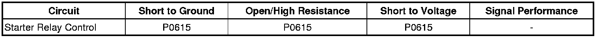

P0615
DTC P0615
Diagnostic Instructions
* Perform the Diagnostic System Check - Vehicle (Initial Inspection and Diagnostic Overview) prior to using this diagnostic procedure.
* Review Strategy Based Diagnosis (Initial Inspection and Diagnostic Overview) for an overview of the diagnostic approach.
* Diagnostic Procedure Instructions (Initial Inspection and Diagnostic Overview) provides an overview of each diagnostic category.
DTC Descriptor
DTC P0615
- Starter Relay Control Circuit
Diagnostic Fault Information

Circuit/System Description
When the ignition switch is placed in the START position, a discrete signal is supplied to the body control module (BCM) notifying it that the ignition is in the START position. The BCM then sends a message to the engine control module (ECM) that crank has been requested. The ECM then verifies that the transmission is in Park or Neutral. If it is, the ECM then supplies 12 volts to the control circuit of the crank relay. When this occurs, battery voltage is supplied through the switch of the crank relay to S terminal of the starter solenoid.
Conditions for Running the DTC
* The Ignition is in the START position.
* The system voltage is between 9.5-18 volts.
Conditions for Setting the DTC
The ECM detects improper voltage on the control circuit of the starter relay.
Action Taken When the DTC Sets
DTC P0615 is a C type DTC.
Conditions for Clearing the DTC
DTC P0615 is a C type DTC.
Reference Information
Schematic Reference
Starting and Charging Schematics ([1][2]Electrical Diagrams)
Connector End View Reference
Component Connector End Views (Connector Views)
Description and Operation
Starting System Description and Operation (Description and Operation)
Electrical Information Reference
* Circuit Testing (Component Tests and General Diagnostics)
* Connector Repairs (Component Tests and General Diagnostics)
* Testing for Intermittent Conditions and Poor Connections (Component Tests and General Diagnostics)
* Wiring Repairs (Component Tests and General Diagnostics)
DTC Type Reference
Powertrain Diagnostic Trouble Code (DTC) Type Definitions (Diagnostic Trouble Code Descriptions)
Scan Tool Reference
Control Module References (Programming and Relearning) for scan tool information
Circuit/System Verification
Ignition ON, verify that no theft deterrent or automatic transmission DTCs are set that would cause the ECM not to enable engine starting.
Circuit/System Testing
1. Ignition ON, verify DTC P0615 is set as current.
2. Ignition OFF, disconnect the crank relay, test for 60-80 ohms between relay terminals 85 and 86.
• If not within the specified range, replace the crank relay.
3. Test for less than 1.0 ohm the relay ground circuit and ground.
• If greater than the specified value, test the ground circuit for an open/high resistance.
4. Ignition OFF, connect a test lamp between the control circuit terminal 86 and the ground circuit terminal 85. Turn the ignition to the start position. The test lamp should only illuminate when the ignition is held in the start position.
• If the test lamp is always On, test the control circuit for short to voltage.
• If the test lamp is always OFF, test the control circuit for a short to ground or an open/high resistance.
5. If the circuit tests normal, replace the ECM.
Repair Instructions
Perform the Diagnostic Repair Verification (Verification Tests) after completing the diagnostic procedure.
* Relay Replacement (Attached to Wire Harness) (Relay Replacement (Attached to Wire Harness))Relay Replacement (Within an Electrical Center) (Relay Replacement (Within an Electrical Center))
* Control Module References (Programming and Relearning) for ECM replacement, setup, and programming